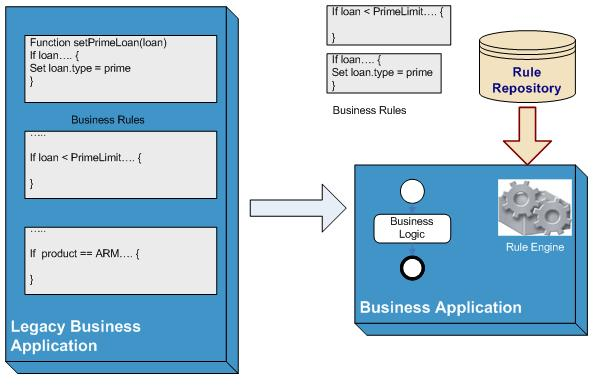

| Practice: Agile Business Rule Development |
 |
|
| The Agile Business Rule Development presents a pragmatic approach (Cycle Approach to Rules Development) to the development of a Business Rule Application using Rule Engine and BRMS (Business Rule Management System) technology such as WebSphere ILOG JRules, ILOG Rules for .Net, Fair Isaac Blaze Advisor, Drools or any other Rule engine and BRMS on the market. This methodology supports the rule governance process description, and the architecture disciplines to deploy a Business Rule Engine into a Service Oriented Architecture and Business Process Management System. |
ABRD applies the agile manifesto to efficiently implement business policies as executable rules. The goal is not having a team spending months to document thousand of rules, where those rules can be implemented, executed, tested in less time. The Agile Business Rule Development methodology addresses in more detail the following goals: · Separate rules as a manageable artifact using discovery, analysis and authoring activities and work products · Trace rules during their full life cycle from requirement to deployment and maintenance · Link rules to business context and motivation · Develop the rule description using business terms and high level rule language · Prepare the logical data model for the rule engine · Prepare the Rule set implementation and deployment as decision services in a SOA or BPM application · Articulate the rule governance processes |
ABRD was developed by ILOG to support implementation and deployment of BRMS by its customers and professional services. It has hundreds of deployments world wide for many different industries. The polytechnic school of Singapore is using it in its curriculum. It is now offered as a free open source methodology as part of the Eclipse Process Framework plug-in library. |
Business rules are an expression of business policy in a form that is both comprehensible to business users and executable by a rule engine. From a business perspective, a business rule is a precise statement that describes, constrains, or controls some aspect of the business.
Let's illustrate this concept with a simple example coming from the lending industry. The following business policy can
be established to limit the loan amount a bank can purchase: Only prime loans are eligible for purchase This policy may be split into two implemented rules, one defining what a prime loan is and the second taking the decision on purchasing it or not.
If the loan amount is less than the prime loan limit, then the loan type is Prime If the loan type is not Prime then reject the loan Implementing these rules using an Object Oriented Language may look like two if statements testing conditions on objects, and applying actions on the same or other objects if (loan.amount < PrimeLoanLimit) { loan.type = PrimeType; } if (loan.type != PrimeType) { case = new Case("Loan is not Prime"); loan.status = REJECT;
} The concept of business rules is not new, and for decades analysts and developers were implementing them within business applications. What is more recent is the introduction of a Business Rule Management System application which provides tools to manage the rule as a standalone element, outside of the core business application, and in a form which is executable by a rule engine. Business rules are packaged as a Rule Set which can be considered as a piece of software executed by a rule engine. Integrated in a business application, the rule set implements a sub-set of the business logic. This logic is externalized from the traditional code and can be easily changed, and maintained by business analysts instead of developers. As opposed to business logic embedded and hidden in functions, procedures, macros or databases, business rules are clearly separated from the rule engine, a software component which executes and activates rules based on matching conditions on a set of data.
Figure 1 below illustrates this fundamental approach in implementing business logic, with the old embedded model on the
left and the new architecture on the right. In many ways the approach is similar to the separation of code and data
which Data Base Management Systems (DBMS) brought in the 1970s.  A piece of business logic or rule embedded in code will be more difficult to identify, locate, and change, therefore increases costs of maintenance. A rule which is externalized in a BRMS platform, and whose versions are controlled in a rule repository and deployed and executed in a rule engine, will be much easier to modify, thus reducing dramatically the time and cost to implement changes required by the business. Traditional software life cycles such as the V cycle or waterfall model are notorious for leading to systems which costs more than expected, come to market later than planned and with outcomes not matching the clients' initial expectations. With such approaches, the business users have little ownership of the solution, and the time required to implement changes can easily range from 3 to 6 months if not more. As a result, policy owners don't feel comfortable with change which translates into a loss of agility to respond to new business and competitive situations: too much time passes between policy owners submitting requirements to IT and the actual deployment of new rules. Also, with all the fine tuning and iterations, policy owners cannot really be sure that the policy is being implemented according to their needs. The only way to actually know is to keep performing tests and hope that all the cases are covered in such tests. As important element of the business decision, the business rules need strong management processes and tools to support their life cycle. A BRMS provides solutions to make this management more efficient, both for developers and for the business users of the applications. Obviously tooling is not the single answer to the software and business challenges behind the development of decision-support systems. Deploying BRMS, BRE, and BPM components into business applications requires to modify current development methodologies and practices in order to take into account new concepts as well as providing a better collaboration framework between IT and business. The Agile Business Rule Development methodology corresponds to such a need. It is an incremental and iterative software development process leveraging the Agile Alliance manifesto (Agile Manifesto). Here are some of the Agile development values particularly relevant to the implementation of a rule set using the ABRD approach: · Individuals and interactions over processes and tools. The rule discovery, analysis and validation activities require an active and efficient communication between the rule developer and the Subject Matter Experts (SMEs). Such processes are defined as light as possible. · Working software over comprehensive documentation. The proposed rule set development done per iteration, with its validation step, is based on the evidence that a working and executable rule set has much more business value than a rule description manual. All the project stakeholders benefit from such a principle but in particular the business users who are then sure that what they see (the rules) is what gets executed in the deployed system. · Customer collaboration over contract negotiation. Subject Matter Experts who define the business policies and the business rules are strongly involved in the development process. They are the customers of the final system, owners of the policies and are conveniently co-located with the development team during the project. · Responding to change over following a plan. Business rules evolve, more often and faster than other standard pieces of software. This is actually one of the key values of the business rule approach. For this fundamental reason the methodology to support the rule set development has to be tailored to such rapid life cycle and include the appropriate activities, processes, best practices and work products to support such changes efficiently. Two fundamental drivers govern successful rule set developments: · The unforgiving honesty of executable rules · The effectiveness of people working together with goodwill, shared vision and common interests (the business user and the development team). Executable or working rules tell the developers and the Subject Matter Expert what they really do as opposed to promise through a paper-based design or specification. ABRD is a practice and extends other element of EPF practice library to avoid redefining some standard roles, tasks, work products, guidelines and processes which are also relevant to rule development. As an EPF plug-in, development teams can leverage it for their own purpose and tailor it to the specific context of their own project, leveraging the EPF Composer tool. |
| The best way to read this practice is to follow the proposed cycle approach process definition, or to go through the disciplines. |
This program and the accompanying materials are made available under the |